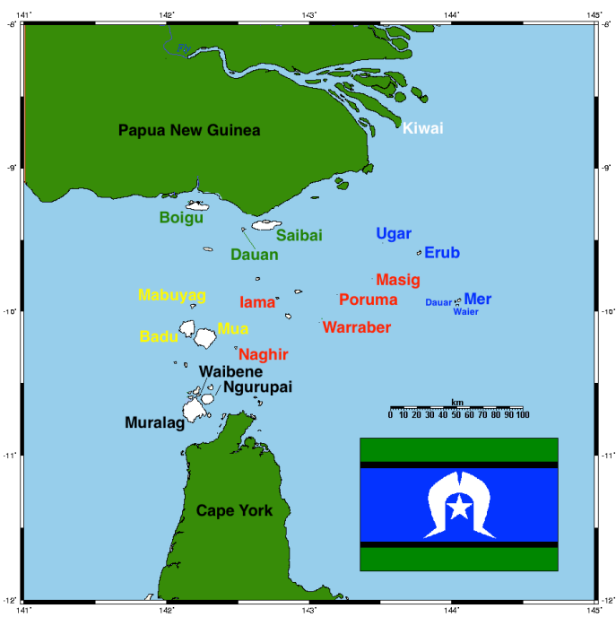
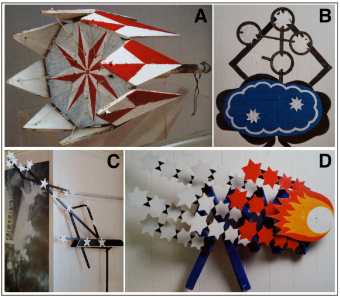

Our Book Series: Placeholder
Placeholder
Astronomy and Music
Sonification
Sonification is the transformation of astronomical data into sound or music.
Data from celestial bodies, like gravitational waves, are mapped and analyzed.
Brightness → loudness, frequency → pitch, temporal changes → rhythm or tempo, etc.
Use software (e.g. Python libraries, MIDI synthesizers, DAWs) to render sound based on the mappings
Adjust musical aspects (e.g. harmonic scales, instrument types) to enhance clarity, preserve scientific meaning, or convey emotion
Result is an audible representation of data that reveals patterns which might be hard to detect visually
(Galindo et al., 2024)

Cultural Foundations
The Melanesian people inhabit an archipelago of islands on the Torres Strait, indigenous to Australia.
Their culture revolves around astronomy, especially the moon.
Lunar phases symbolize in a dance called Gedge Togia, which means "rising over home"
The cultural connection they have between islands represents how astronomy and music brings communities of different backgrounds together.
Celestial bodies inspire music and dance and enforce way of life in the modern age as well.
We can utilize astronomy and music to uplift and create community.
(Hamacher et al., 2017)

The Stars of Tagai: Act as custodians, enforce cultural connection, law, and the cycle of life
A map of the Torres Strait, detailing inhabited islands.
Astronomical dance machines. A: Titui, B: Southern Cross, C: The Tagai, D: Comet
Asteroseismology
(NASA, 2018)

Musical Impact
(Wang, 2006)
Astronomy and the Human Body
- post-space flight recovery
- difficult to recover loss of muscle mass to antigravitational muscles (ex: calf)
- a variety of factors cause complicated responses to space travel
- possible hormonal stress response impacts all over the body
Music and the Human Body
- Modulation of the autonomic nervous system by music: Heart Rate Variability (HRV), Blood Pressure, Respiratory Rate, Sympathetic-Parasympathetic Balance
- Effects of music on the endocrine system: reduction of cortisol levels, increase of oxytocin secretion, regulation of the hypothalamic pituitary adrenal axis
- Neural effect of music on the brain: brainwave synchronization (EEG entertainment) neuroplasticity, emotional and reward system modulation
- Application of music: sleep disorders, anxiety and stress management, loneliness and cognitive Fatigue